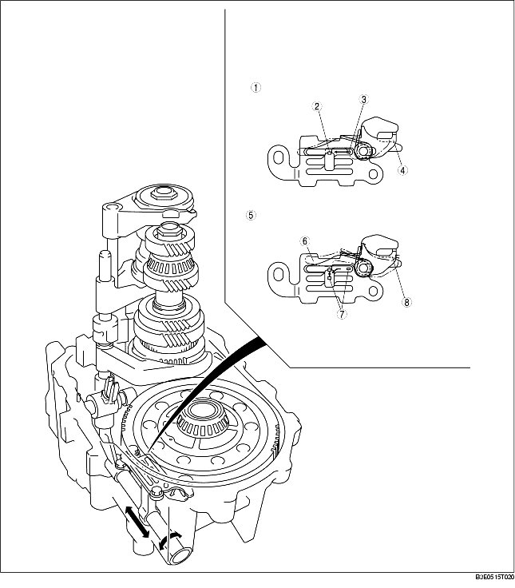

• If, when downshifting from 5th to 4th, the gear shift lever is shifted into reverse unintentionally, the reverse gate locks the gear shift lever's movement to prevent operation error.
When shifting again into reverse, temporarily returning the gear shift lever to the neutral position to push out the reverse gate cancels the lock and enables shifting to take place.

.